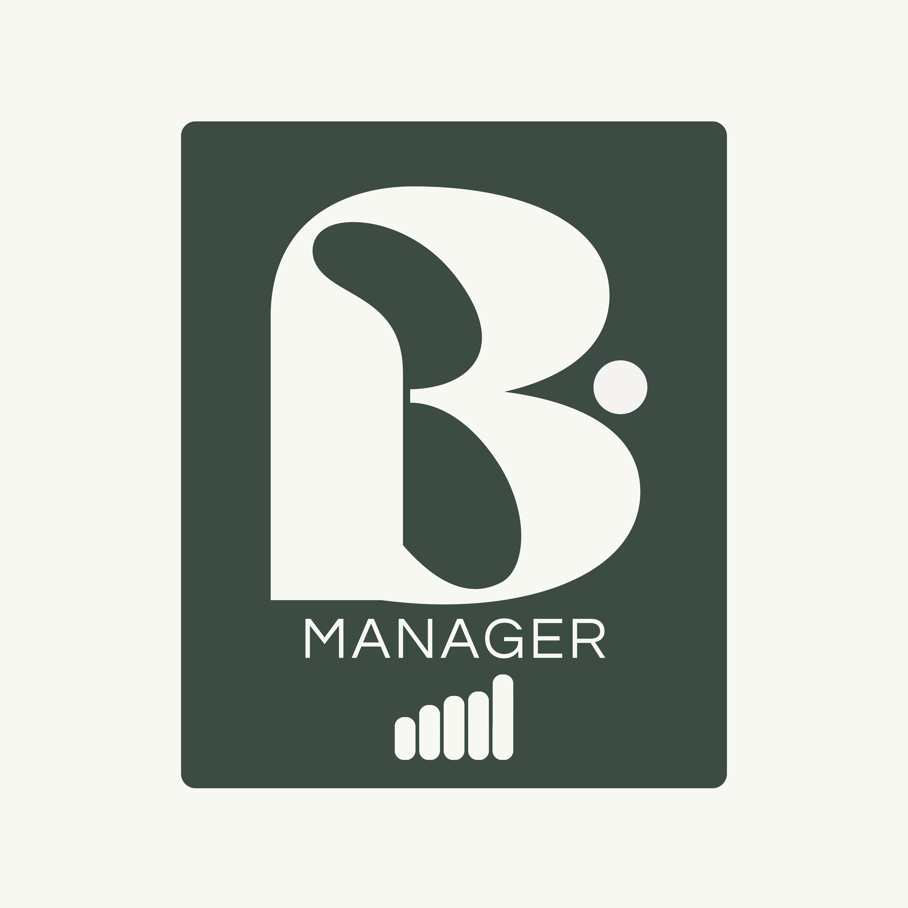

Fluxo de caixa
Organização de entradas, saídas, categorias e projeções para melhorar a previsibilidade e o controle de liquidez.

Cuidamos da rotina financeira do seu negócio — da organização do dia a dia aos relatórios — para que você tenha mais clareza, controle e segurança para decidir.
Soluções sob medida para organizar rotinas, visualizar cenários e apoiar decisões.
Organização de entradas, saídas, categorias e projeções para melhorar a previsibilidade e o controle de liquidez.
Construção de cenários de curto e médio prazo, análise de capital de giro e apoio à tomada de decisão.
Indicadores, previsto versus realizado e materiais objetivos para acompanhar a performance do negócio.
Estruturação de demonstrativos e rotinas de conciliação, contas a pagar e contas a receber.
Revisão de rotinas, redução de retrabalho, padronização de dados e oportunidades de automação.
Apoio na unificação de controles e processos financeiros em fases de transição ou crescimento.
Planilhas e guias gratuitos, criados para ajudar você a entender, organizar e analisar as finanças da sua empresa com mais clareza.
Uma estrutura prática para registrar entradas e saídas, acompanhar o saldo e começar a organizar a rotina financeira do seu negócio.
Conceitos essenciais para entender as movimentações da empresa, diferenciar caixa de resultado e identificar sinais que merecem atenção.
PDF disponível em breveTeste BManager // edição 01
8 perguntas rápidas para descobrir como anda a organização financeira do seu negócio. Sem planilha traumática e sem julgamento.
INICIAR TESTE ►Acredito que uma boa gestão financeira começa pelo conhecimento. Por isso, compartilho no Instagram conteúdos básicos, práticos e gratuitos sobre fluxo de caixa, organização financeira, planejamento e indicadores.
São conceitos essenciais para quem está começando e quer tomar decisões com mais clareza e segurança no seu negócio.
Ver todos os conteúdos no Instagram
Sou Bárbara March, Analista Financeira Sênior com mais de 5 anos de experiência em planejamento financeiro, fluxo de caixa, controle de liquidez, modelagem e análise de performance.
Minha trajetória inclui atuação em um grande grupo hospitalar, integração financeira de M&A, elaboração de DFC para reporte regulatório e projetos de melhoria de processos e automação de relatórios.
Conte um pouco sobre o seu desafio financeiro e vamos entender a melhor forma de organizar e fortalecer a gestão do seu negócio.